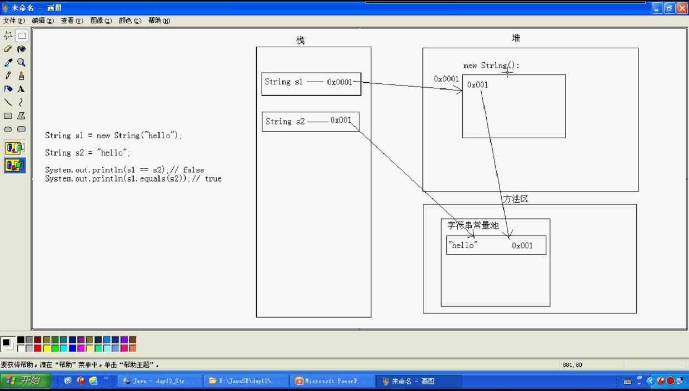

本章内容¶
API概述¶
常用类¶
• Object类/Scanner类
• String类/StringBuffer类/StringBuilder类
• 数组高级和Arrays类
• 基本类型包装类(Integer,Character)
• 正则表达式(Pattern,Matcher)
• Math类/Random类/System类
• BigInteger类/BigDecimal类
• Date类/DateFormat类/Calendar类
API概述¶
API(Application Programming Interface)¶
• 应用程序编程接口
• 编写一个机器人程序去控制机器人踢足球，程序就需要向机器人发出向前跑、向后跑、射门、抢球等各种命令，没有编过程序的人很难想象这样的程序如何编写。但是对于有经验的开发人员来说，知道机器人厂商一定会提供一些用于控制机器人的Java类，这些类中定义好了操作机器人各种动作的方法。其实，这些 Java类就是机器人厂商提供给应用程序编程的接口，大家把这些类称为Xxx Robot API。本章涉及的Java
API指的就是JDK中提供的各种功能的Java类。
学习汉语和学习编程的异同点¶
- 相同点
• 基本语法
• 大量成语
• 写文章的手法和技巧
- 不同点
• 学习汉语 必须先学后用
• 学习编程 可以现用现学
**Object**类概述及其构造方法¶
- Object类概述
• 类层次结构的根类
• 所有类都直接或者间接的继承自该类
- 构造方法
• public Object()
• 回想面向对象中为什么说：
• 子类的构造方法默认访问的是父类的无参构造方法
Object类的成员方法¶
-
public int hashCode()
-
public final Class getClass()
-
public String toString()
-
public boolean equals(Object obj)
-
protected void finalize()
-
protected Object clone()
**Scanner**类概述及其构造方法¶
- Scanner类概述
• JDK5以后用于获取用户的键盘输入
- 构造方法
• public Scanner(InputStream source)
package cn.itcast_01; /* * Scanner:用于接收键盘录入数据。 * * 前面的时候： * A:导包 * B:创建对象 * C:调用方法 * * System类下有一个静态的字段： * public static final InputStream in; 标准的输入流，对应着键盘录入。 * * InputStream is = System.in; System.in是input类型 * * class Demo { * public static final int x = 10; * public static final Student s = new Student(); * } * int y = Demo.x; demo.s是int类型 * Student s = Demo.s; demo.s 是对象 * * * 构造方法： * Scanner(InputStream source) */ import java.util.Scanner; public class ScannerDemo { public static void main(String[] args) { // 创建对象 Scanner sc = new Scanner(System.in); int x = sc.nextInt(); System.out.println("x:" + x); } }
Scanner类的成员方法¶
- 基本格式
• hasNextXxx() 判断是否还有下一个输入项,其中Xxx 可以是Int,Double等。如果需要判断是否包含下一个字符串，则可以省略Xxx
package cn.itcast_02; import java.util.Scanner; /* * 基本格式： * public boolean hasNextXxx():判断是否是某种类型的元素 * public Xxx nextXxx():获取该元素 * * 举例：用int类型的方法举例 * public boolean hasNextInt() * public int nextInt() * * 注意： * InputMismatchException：输入的和你想要的不匹配 */ public class ScannerDemo { public static void main(String[] args) { // 创建对象 Scanner sc = new Scanner(System.in); System.out.println("請輸入一個整數"); // 获取数据 if (sc.hasNextInt()) { int x = sc.nextInt(); System.out.println("x:" + x); } else { System.out.println("你输入的数据有误"); } } }
• nextXxx() 获取下一个输入项。Xxx的含义和上个方法中的Xxx相同
• 默认情况下，Scanner使用空格，回车等作为分隔符
- 常用方法
• public int nextInt()
• public String nextLine()
package cn.itcast_03; import java.util.Scanner; /* * 常用的两个方法： * public int nextInt():获取一个int类型的值 * public String nextLine():获取一个String类型的值 * * 出现问题了： * 先获取一个数值，在获取一个字符串，会出现问题。 * 主要原因：就是那个换行符号的问题。 * 如何解决呢? * A:先获取一个数值后，在创建一个新的键盘录入对象获取字符串。 * B:把所有的数据都先按照字符串获取，然后要什么，你就对应的转换为什么。 */ public class ScannerDemo { public static void main(String[] args) { // 创建对象 Scanner sc = new Scanner(System.in); // 获取两个int类型的值,只是整数的时候不会出问题 // int a = sc.nextInt(); // int b = sc.nextInt(); // System.out.println("a:" + a + ",b:" + b); // System.out.println("-------------------"); // 获取两个String类型的值只是字符串的时候不会出问题 // String s1 = sc.nextLine(); // String s2 = sc.nextLine(); // System.out.println("s1:" + s1 + ",s2:" + s2); // System.out.println("-------------------"); // 先获取一个字符串，在获取一个int值,不会出问题 // String s1 = sc.nextLine(); // int b = sc.nextInt(); // System.out.println("s1:" + s1 + ",b:" + b); // System.out.println("-------------------"); // 先获取一个int值，在获取一个字符串,数值类型的只会把数值截掉给int /r/n 给下面的字符串 // int a = sc.nextInt(); // String s2 = sc.nextLine(); // System.out.println("a:" + a + ",s2:" + s2); // System.out.println("-------------------"); int a = sc.nextInt(); //使用两个键盘输入,但是键盘输入多了就很麻烦 Scanner sc2 = new Scanner(System.in); String s = sc2.nextLine(); System.out.println("a:" + a + ",s:" + s); } }
**String**类概述及其构造方法¶
- String类概述
• 字符串是由多个字符组成的一串数据(字符序列)
• 字符串可以看成是字符数组
- 构造方法
• public String()
• public String(byte[] bytes)
• public String(byte[] bytes,int offset,int length)
• public String(char[] value)
• public String(char[] value,int offset,int count)
• public String(String original)
package cn.itcast_01; /* * 字符串：就是由多个字符组成的一串数据。也可以看成是一个字符数组。 * 通过查看API，我们可以知道 * A:字符串字面值"abc"也可以看成是一个字符串对象。 * B:字符串是常量，一旦被赋值，就不能被改变。 * * 构造方法： * public String():空构造 * public String(byte[] bytes):把字节数组转成字符串,byte[] bys 字节数组 * public String(byte[] bytes,int index,int length):把字节数组的一部分转成字符串 * public String(char[] value):把字符数组转成字符串 * public String(char[] value,int index,int count):把字符数组的一部分转成字符串 * public String(String original):把字符串常量值转成字符串 * * 字符串的方法： * public int length()：返回此字符串的长度。 */ public class StringDemo { public static void main(String[] args) { // public String():空构造 String s1 = new String(); System.out.println("s1:" + s1); System.out.println("s1.length():" + s1.length()); // s1.length(),字符串的长度 System.out.println("--------------------------"); // public String(byte[] bytes):把字节数组转成字符串 byte[] bys = { 97, 98, 99, 100, 101 }; // 字节数组 String s2 = new String(bys); // 将字节数组转换成字符串 abcde System.out.println("s2:" + s2); System.out.println("s2.length():" + s2.length()); System.out.println("--------------------------"); // public String(byte[] bytes,int index,int length):把字节数组的一部分转成字符串 // 我想得到字符串"bcd" String s3 = new String(bys, 1, 3); //转换的是从1开始,转换3个 System.out.println("s3:" + s3); System.out.println("s3.length():" + s3.length()); System.out.println("--------------------------"); // public String(char[] value):把字符数组转成字符串 char[] chs = { 'a', 'b', 'c', 'd', 'e', '爱', '林', '亲' }; String s4 = new String(chs); System.out.println("s4:" + s4); System.out.println("s4.length():" + s4.length()); System.out.println("--------------------------"); // public String(char[] value,int index,int count):把字符数组的一部分转成字符串 String s5 = new String(chs, 2, 4); System.out.println("s5:" + s5); System.out.println("s5.length():" + s5.length()); System.out.println("--------------------------"); // public String(String original):把字符串常量值转成字符串 String s6 = new String("abcde"); System.out.println("s6:" + s6); System.out.println("s6.length():" + s6.length()); System.out.println("--------------------------"); // 字符串字面值"abc"也可以看成是一个字符串对象。一般选的是这一个 String s7 = "abcde"; System.out.println("s7:" + s7); System.out.println("s7.length():" + s7.length()); } }
**String**类的特点及面试题¶
- 字符串是常量,它的值在创建之后不能更改
• String s = “hello”; s += “world”; 问s的结果是多少?
package cn.itcast_02; /* * 字符串的特点：一旦被赋值，就不能改变。 */ public class StringDemo { public static void main(String[] args) { String s = "hello"; s += "world"; // 这里只是连接 System.out.println("s:" + s); // helloworld } }
值不能变但是,地址值可以改变,引用的是地址值
- 面试题
• String s = new String(“hello”)和String s = “hello”;的区别?
package cn.itcast_02; /* * String s = new String(“hello”)和String s = “hello”;的区别? * 有。前者会创建2个对象，后者创建1个对象。 * * ==:比较引用类型比较的是地址值是否相同 * equals:比较引用类型默认也是比较地址值是否相同，而String类重写了equals()方法，比较的是内容是否相同。 */ public class StringDemo2 { public static void main(String[] args) { String s1 = new String("hello"); String s2 = "hello"; System.out.println(s1 == s2);// false,比较的是地址值是否相同 System.out.println(s1.equals(s2));// true,重写了方法比较的是内容是否相同 } }
创建了两个对象 new出来需要到堆中找

前者创建了一个对象 直接到常量池查找
• 字符串比较之看程序写结果
package cn.itcast_02; /* * 看程序写结果 */ public class StringDemo3 { public static void main(String[] args) { String s1 = new String("hello"); String s2 = new String("hello"); System.out.println(s1 == s2);// false 地址值是不同的 System.out.println(s1.equals(s2));// true 内容相同 String s3 = new String("hello"); String s4 = "hello"; System.out.println(s3 == s4);// false System.out.println(s3.equals(s4));// true String s5 = "hello"; String s6 = "hello"; System.out.println(s5 == s6);// true 都是直接在常量池拿的,所以地址值是一样的 System.out.println(s5.equals(s6));// true } }
• 字符串拼接之看程序写结果
package cn.itcast_02; /* * 看程序写结果 * 字符串如果是变量相加，先开空间，在拼接。 * 字符串如果是常量相加，是先加，然后在常量池找，如果有就直接返回，否则，就创建。 */ public class StringDemo4 { public static void main(String[] args) { String s1 = "hello"; String s2 = "world"; String s3 = "helloworld"; System.out.println(s3 == s1 + s2);// false 字符串如果是变量相加，先开空间，在拼接 System.out.println(s3.equals((s1 + s2)));// true System.out.println(s3 == "hello" + "world");// false 这个我们错了，应该是true "hello" + "world" 加起来是个常量,因为在常量池里有就直接拿过来,两个地址就是一样的 System.out.println(s3.equals("hello" + "world"));// true // 通过反编译看源码，我们知道这里已经做好了处理。 // System.out.println(s3 == "helloworld"); // System.out.println(s3.equals("helloworld")); } }
String类的判断功能¶
-
boolean equals(Object obj)
-
boolean equalsIgnoreCase(String str)
-
boolean contains(String str)
-
boolean startsWith(String str)
-
boolean endsWith(String str)
-
boolean isEmpty()
package cn.itcast_03; /* * String类的判断功能： * boolean equals(Object obj):比较字符串的内容是否相同,区分大小写,重写了方法的比较的是内容 * boolean equalsIgnoreCase(String str):比较字符串的内容是否相同,忽略大小写 IgnoreCase忽略大小写 * boolean contains(String str):判断大字符串中是否包含小字符串 * boolean startsWith(String str):判断字符串是否以某个指定的字符串开头 * boolean endsWith(String str):判断字符串是否以某个指定的字符串结尾 startsWith以什么开头 * boolean isEmpty():判断字符串是否为空。 isEmpty是否为空 * * 注意： * 字符串内容为空和字符串对象为空。 * String s = ""; 字符串内容为空 * String s = null; 字符串对象为空 */ public class StringDemo { public static void main(String[] args) { // 创建字符串对象 String s1 = "helloworld"; String s2 = "helloworld"; String s3 = "HelloWorld"; // boolean equals(Object obj):比较字符串的内容是否相同,区分大小写 System.out.println("equals:" + s1.equals(s2)); // True System.out.println("equals:" + s1.equals(s3)); // False System.out.println("-----------------------"); // boolean equalsIgnoreCase(String str):比较字符串的内容是否相同,忽略大小写 System.out.println("equals:" + s1.equalsIgnoreCase(s2)); // True System.out.println("equals:" + s1.equalsIgnoreCase(s3)); // True System.out.println("-----------------------"); // boolean contains(String str):判断大字符串中是否包含小字符串 System.out.println("contains:" + s1.contains("hello")); // True System.out.println("contains:" + s1.contains("hw")); // False得是连续的 System.out.println("-----------------------"); // boolean startsWith(String str):判断字符串是否以某个指定的字符串开头 System.out.println("startsWith:" + s1.startsWith("h")); // True System.out.println("startsWith:" + s1.startsWith("hello")); // 字符串开头 System.out.println("startsWith:" + s1.startsWith("world")); // 这个不是在开头的位置 System.out.println("-----------------------"); // 练习：boolean endsWith(String str):判断字符串是否以某个指定的字符串结尾这个自己玩 System.out.println("endsWith:" + s1.endsWith("h")); // False System.out.println("endsWith:" + s1.endsWith("hello")); // False System.out.println("endsWith:" + s1.endsWith("world")); // True System.out.println("-----------------------"); // boolean isEmpty():判断字符串是否为空。 System.out.println("isEmpty:" + s1.isEmpty()); //false String s4 = ""; String s5 = null; System.out.println("isEmpty:" + s4.isEmpty()); //true // NullPointerException // s5对象都不存在，所以不能调用方法，空指针异常 // System.out.println("isEmpty:" + s5.isEmpty()); } }
测试:模拟登录
package cn.itcast_03; import java.util.Scanner; /* * 模拟登录,给三次机会,并提示还有几次。 * * 分析： * A:定义用户名和密码。已存在的。 * B:键盘录入用户名和密码。 * C:比较用户名和密码。 * 如果都相同，则登录成功 * 如果有一个不同，则登录失败 * D:给三次机会，用循环改进，最好用for循环。 */ public class StringTest { public static void main(String[] args) { // 定义用户名和密码。已存在的。 String username = "admin"; //局部 String password = "admin"; // 给三次机会，用循环改进，最好用for循环。 for (int x = 0; x < 3; x++) { // x=0,1,2 // 键盘录入用户名和密码。 Scanner sc = new Scanner(System.in); System.out.println("请输入用户名："); String name = sc.nextLine(); System.out.println("请输入密码："); String pwd = sc.nextLine(); // 比较用户名和密码。 if (name.equals(username) && pwd.equals(password)) { // 如果都相同，则登录成功 System.out.println("登录成功"); break; } else { // 如果有一个不同，则登录失败 // 2,1,0 // 如果是第0次，应该换一种提示 if ((2 - x) == 0) { System.out.println("帐号被锁定，请与班长联系"); } else { System.out.println("登录失败，你还有" + (2 - x) + "次机会"); } } } } }
package cn.itcast_03; import java.util.Scanner; /* * 模拟登录,给三次机会,并提示还有几次。如果登录成功，就可以玩猜数字小游戏了。 * * 分析： * A:定义用户名和密码。已存在的。 * B:键盘录入用户名和密码。 * C:比较用户名和密码。 * 如果都相同，则登录成功 * 如果有一个不同，则登录失败 * D:给三次机会，用循环改进，最好用for循环。 */ public class StringTest2 { public static void main(String[] args) { // 定义用户名和密码。已存在的。 String username = "admin"; String password = "admin"; // 给三次机会，用循环改进，最好用for循环。 for (int x = 0; x < 3; x++) { // x=0,1,2 // 键盘录入用户名和密码。 Scanner sc = new Scanner(System.in); System.out.println("请输入用户名："); String name = sc.nextLine(); System.out.println("请输入密码："); String pwd = sc.nextLine(); // 比较用户名和密码。 if (name.equals(username) && pwd.equals(password)) { // 如果都相同，则登录成功 System.out.println("登录成功,开始玩游戏"); // 猜数字游戏 GuessNumberGame.start(); // 自己包里的类的函数直接调用 break; } else { // 如果有一个不同，则登录失败 // 2,1,0 // 如果是第0次，应该换一种提示 if ((2 - x) == 0) { System.out.println("帐号被锁定，请与班长联系"); } else { System.out.println("登录失败，你还有" + (2 - x) + "次机会"); } } } } }
猜数字小游戏的代码
package cn.itcast_03; import java.util.Scanner; /* * 这时猜数字小游戏的代码 */ public class GuessNumberGame { private GuessNumberGame() { } public static void start() { // 产生一个随机数 int number = (int) (Math.random() * 100) + 1; while (true) { // 键盘录入数据 Scanner sc = new Scanner(System.in); System.out.println("请输入你要猜的数据(1-100)："); int guessNumber = sc.nextInt(); // 判断 if (guessNumber > number) { System.out.println("你猜的数据" + guessNumber + "大了"); } else if (guessNumber < number) { System.out.println("你猜的数据" + guessNumber + "小了"); } else { System.out.println("恭喜你，猜中了"); break; } } } }
String类的获取功能¶
-
int length()
-
char charAt(int index)
-
int indexOf(int ch)
-
int indexOf(String str)
-
int indexOf(int ch,int fromIndex)
-
int indexOf(String str,int fromIndex)
-
String substring(int start)
-
String substring(int start,int end)
package cn.itcast_04; /* * String类的获取功能 * int length():获取字符串的长度。 * char charAt(int index):获取指定索引位置的字符 charAt字符在.. * int indexOf(int ch):返回指定字符在此字符串中第一次出现处的索引。 * 为什么这里是int类型，而不是char类型? * 原因是：'a'和97其实都可以代表'a' * int indexOf(String str):返回指定字符串在此字符串中第一次出现处的索引。 * int indexOf(int ch,int fromIndex):返回指定字符在此字符串中从指定位置后第一次出现处的索引。 * int indexOf(String str,int fromIndex):返回指定字符串在此字符串中从指定位置后第一次出现处的索引。 * String substring(int start):从指定位置开始截取字符串,默认到末尾。substring截取字符串 * String substring(int start,int end):从指定位置开始到指定位置结束截取字符串。 */ public class StringDemo { public static void main(String[] args) { // 定义一个字符串对象 String s = "helloworld"; // int length():获取字符串的长度。 System.out.println("s.length:" + s.length()); System.out.println("----------------------"); // char charAt(int index):获取指定索引位置的字符 System.out.println("charAt:" + s.charAt(7)); System.out.println("----------------------"); // int indexOf(int ch):返回指定字符在此字符串中第一次出现处的索引。 System.out.println("indexOf:" + s.indexOf('l')); System.out.println("----------------------"); // int indexOf(String str):返回指定字符串在此字符串中第一次出现处的索引。 System.out.println("indexOf:" + s.indexOf("owo")); System.out.println("----------------------"); // int indexOf(int ch,int fromIndex):返回指定字符在此字符串中从指定位置后第一次出现处的索引。 System.out.println("indexOf:" + s.indexOf('l', 4)); System.out.println("indexOf:" + s.indexOf('k', 4)); // -1 System.out.println("indexOf:" + s.indexOf('l', 40)); // -1 System.out.println("----------------------"); // 自己练习：int indexOf(String str,int // fromIndex):返回指定字符串在此字符串中从指定位置后第一次出现处的索引。 // String substring(int start):从指定位置开始截取字符串,默认到末尾。包含start这个索引 System.out.println("substring:" + s.substring(5)); System.out.println("substring:" + s.substring(0)); System.out.println("----------------------"); // String substring(int start,int // end):从指定位置开始到指定位置结束截取字符串。包括start索引但是不包end索引 System.out.println("substring:" + s.substring(3, 8)); System.out.println("substring:" + s.substring(0, s.length())); } }
执行结果:
s.length:10 ---------------------- charAt:r ---------------------- indexOf:2 ---------------------- indexOf:4 ---------------------- indexOf:8 indexOf:-1 indexOf:-1 ---------------------- substring:world substring:helloworld ---------------------- substring:lowor substring:helloworld
遍历获取打印所有的字符
package cn.itcast_04; /* * 需求：遍历获取字符串中的每一个字符 * * 分析： * A:如何能够拿到每一个字符呢? * char charAt(int index) * B:我怎么知道字符到底有多少个呢? * int length() */ public class StringTest { public static void main(String[] args) { // 定义字符串 String s = "helloworld"; // 原始版本 // System.out.println(s.charAt(0)); // System.out.println(s.charAt(1)); // System.out.println(s.charAt(2)); // System.out.println(s.charAt(3)); // System.out.println(s.charAt(4)); // System.out.println(s.charAt(5)); // System.out.println(s.charAt(6)); // System.out.println(s.charAt(7)); // System.out.println(s.charAt(8)); // System.out.println(s.charAt(9)); // 只需要我们从0取到9 // for (int x = 0; x < 10; x++) { // System.out.println(s.charAt(x)); // } // 如果长度特别长，我不可能去数，所以我们要用长度功能 for (int x = 0; x < s.length(); x++) { // char ch = s.charAt(x); // System.out.println(ch); // 仅仅是输出，我就直接输出了 System.out.println(s.charAt(x)); } } }
需求：统计一个字符串中大写字母字符，小写字母字符，数字字符出现的次数。(不考虑其他字符)
package cn.itcast_04; /* * 需求：统计一个字符串中大写字母字符，小写字母字符，数字字符出现的次数。(不考虑其他字符) * 举例： * "Hello123World" * 结果： * 大写字符：2个 * 小写字符：8个 * 数字字符：3个 * * 分析： * 前提：字符串要存在 * A:定义三个统计变量 * bigCount=0 * smallCount=0 * numberCount=0 * B:遍历字符串，得到每一个字符。 * length()和charAt()结合 * C:判断该字符到底是属于那种类型的 * 大：bigCount++ * 小：smallCount++ * 数字：numberCount++ * * 这道题目的难点就是如何判断某个字符是大的，还是小的，还是数字的。 * ASCII码表： * 0 48 数字是最小的 * A 65 * a 97 * 虽然，我们按照数字的这种比较是可以的，但是想多了，有比这还简单的 * char ch = s.charAt(x); * * if(ch>='0' && ch<='9') numberCount++ * if(ch>='a' && ch<='z') smallCount++ * if(ch>='A' && ch<='Z') bigCount++ * D:输出结果。 * * 练习：把给定字符串的方式，改进为键盘录入字符串的方式。 */ public class StringTest2 { public static void main(String[] args) { //定义一个字符串 String s = "Hello123World"; //定义三个统计变量 int bigCount = 0; int smallCount = 0; int numberCount = 0; //遍历字符串，得到每一个字符。 for(int x=0; x<s.length(); x++){ char ch = s.charAt(x); //判断该字符到底是属于那种类型的 if(ch>='a' && ch<='z'){ smallCount++; }else if(ch>='A' && ch<='Z'){ bigCount++; }else if(ch>='0' && ch<='9'){ numberCount++; } } //输出结果。 System.out.println("大写字母"+bigCount+"个"); System.out.println("小写字母"+smallCount+"个"); System.out.println("数字"+numberCount+"个"); } }
String类的转换功能¶
-
byte[] getBytes()
-
char[] toCharArray()
-
static String valueOf(char[] chs)
-
static String valueOf(int i)
-
String toLowerCase() l String toUpperCase()
-
String concat(String str)
java package cn.itcast_05;
/*
-
String的转换功能：
-
byte[] getBytes():把字符串转换为字节数组。
-
char[] toCharArray():把字符串转换为字符数组。
-
static String valueOf(char[] chs):把字符数组转成字符串。
-
static String valueOf(int i):把int类型的数据转成字符串。
-
注意：String类的valueOf方法可以把任意类型的数据转成字符串。
-
String toLowerCase():把字符串转成小写。
-
String toUpperCase():把字符串转成大写。
-
String concat(String str):把字符串拼接。 */ public class StringDemo { public static void main(String[] args) { // 定义一个字符串对象 String s = "JavaSE";
// byte[] getBytes():把字符串转换为字节数组。 byte[] bys = s.getBytes(); // 字节数组 for (int x = 0; x < bys.length; x++) { System.out.println(bys[x]); // 打印字节数组中的字符,输出的是数字 } System.out.println("----------------"); // char[] toCharArray():把字符串转换为字符数组。 char[] chs = s.toCharArray(); for (int x = 0; x < chs.length; x++) { System.out.println(chs[x]); } System.out.println("----------------"); // static String valueOf(char[] chs):把字符数组转成字符串。 String ss = String.valueOf(chs); System.out.println(ss); System.out.println("----------------"); // static String valueOf(int i):把int类型的数据转成字符串。 int i = 100; String sss = String.valueOf(i); System.out.println(sss); System.out.println("----------------"); // String toLowerCase():把字符串转成小写。 System.out.println("toLowerCase:" + s.toLowerCase()); //产生的是新的字符串,原来的是不变的 System.out.println("s:" + s); // System.out.println("----------------"); // String toUpperCase():把字符串转成大写。 System.out.println("toUpperCase:" + s.toUpperCase()); System.out.println("----------------"); // String concat(String str):把字符串拼接。 String s1 = "hello"; String s2 = "world"; String s3 = s1 + s2; //这个更方便 String s4 = s1.concat(s2); //就是装逼 System.out.println("s3:" + s3); System.out.println("s4:" + s4);} }
``` 执行结果:
```java 74 97 118 97 83 69
J a v a S E
JavaSE¶
100¶
toLowerCase:javase s:JavaSE toUpperCase:JAVASE
s3:helloworld s4:helloworld
```
把一个字符串的首字母转成大写，其余为小写。(只考虑英文大小写字母字符)
package cn.itcast_05; //包 /* * 需求：把一个字符串的首字母转成大写，其余为小写。(只考虑英文大小写字母字符) * 举例： * helloWORLD * 结果： * Helloworld * * 分析： * A:先获取第一个字符 * B:获取除了第一个字符以外的字符 * C:把A转成大写 * D:把B转成小写 * E:C拼接D */ public class StringTest { public static void main(String[] args) { // 定义一个字符串 String s = "helloWORLD"; // 先获取第一个字符 String s1 = s.substring(0, 1); // 获取除了第一个字符以外的字符 String s2 = s.substring(1); // 把A转成大写 String s3 = s1.toUpperCase(); // 把B转成小写 String s4 = s2.toLowerCase(); // C拼接D String s5 = s3.concat(s4); System.out.println(s5); // 优化后的代码 // 链式编程 String result = s.substring(0, 1).toUpperCase() .concat(s.substring(1).toLowerCase()); System.out.println(result); } }
执行结果:
Helloworld Helloworld
String类的其他功能¶
- 替换功能
•String replace(char old,char new)
•String replace(String old,String new)
- 去除字符串两空格
•String trim()
- 按字典顺序比较两个字符串
•int compareTo(String str)
•int compareToIgnoreCase(String str)
package cn.itcast_06; /* * String类的其他功能： * * 替换功能： * String replace(char old,char new) * String replace(String old,String new) * * 去除字符串两空格 * String trim() * * 按字典顺序比较两个字符串 * int compareTo(String str) //区分大小写 * int compareToIgnoreCase(String str) //不区分大小写 */ public class StringDemo { public static void main(String[] args) { // 替换功能 String s1 = "helloworld"; String s2 = s1.replace('l', 'k'); String s3 = s1.replace("owo", "ak47"); System.out.println("s1:" + s1); System.out.println("s2:" + s2); System.out.println("s3:" + s3); System.out.println("---------------"); // 去除字符串两端空格 String s4 = " hello world "; String s5 = s4.trim(); System.out.println("s4:" + s4 + "---"); System.out.println("s5:" + s5 + "---"); // 按字典顺序比较两个字符串 String s6 = "hello"; String s7 = "hello"; String s8 = "abc"; String s9 = "xyz"; System.out.println(s6.compareTo(s7));// 0 System.out.println(s6.compareTo(s8));// 7 h-a=7 System.out.println(s6.compareTo(s9));// -16 h-x=-16 ,第一个相同则比较后面的 } }
执行结果:
s1:helloworld s2:hekkoworkd s3:hellak47rld --------------- s4: hello world --- s5:hello world--- 0 7 -16
package cn.itcast_06; /* * 如果我们看到问题了，看怎么办呢? * 看源码。 */ public class StringTest { public static void main(String[] args) { String s1 = "hello"; String s2 = "hel"; System.out.println(s1.compareTo(s2)); // 2 为什么是2? } }
源码的查看:
private final char value[]; 字符串会自动转换为一个字符数组。 public int compareTo(String anotherString) { //this -- s1 -- "hello" //anotherString -- s2 -- "hel" int len1 = value.length; //this.value.length--s1.toCharArray().length--5 int len2 = anotherString.value.length;//s2.value.length -- s2.toCharArray().length--3 int lim = Math.min(len1, len2); //Math.min(5,3); -- lim=3; char v1[] = value; //s1.toCharArray() char v2[] = anotherString.value; //char v1[] = {'h','e','l','l','o'}; //char v2[] = {'h','e','l'}; int k = 0; while (k < lim) { char c1 = v1[k]; //c1='h','e','l' char c2 = v2[k]; //c2='h','e','l' if (c1 != c2) { return c1 - c2; } k++; } return len1 - len2; //5-3=2; //当比较完了全部相同的那么就返回的是两个字符串的长度相减 } String s1 = "hello"; String s2 = "hel"; System.out.println(s1.compareTo(s2)); // 2
String类练习¶
- 把数组中的数据按照指定个格式拼接成一个字符串
• 举例：int[] arr = {1,2,3}; 输出结果：[1, 2, 3]
package cn.itcast_07; /* * 需求：把数组中的数据按照指定个格式拼接成一个字符串 * 举例： * int[] arr = {1,2,3}; * 输出结果： * "[1, 2, 3]" * 分析： * A:定义一个字符串对象，只不过内容为空 * B:先把字符串拼接一个"[" * C:遍历int数组，得到每一个元素 * D:先判断该元素是否为最后一个 * 是：就直接拼接元素和"]" * 不是：就拼接元素和逗号以及空格 * E:输出拼接后的字符串 */ public class StringTest { public static void main(String[] args) { // 前提是数组已经存在 int[] arr = { 1, 2, 3 }; // 定义一个字符串对象，只不过内容为空 String s = ""; // 先把字符串拼接一个"[" s += "["; // 遍历int数组，得到每一个元素 for (int x = 0; x < arr.length; x++) { // 先判断该元素是否为最后一个 if (x == arr.length - 1) { // 就直接拼接元素和"]" s += arr[x]; s += "]"; } else { // 就拼接元素和逗号以及空格 s += arr[x]; s += ", "; } } // 输出拼接后的字符串 System.out.println("最终的字符串是：" + s); } }
定义成函数功能:
package cn.itcast_07; /* * 需求：把数组中的数据按照指定个格式拼接成一个字符串 * 举例： * int[] arr = {1,2,3}; * 输出结果： * "[1, 2, 3]" * 分析： * A:定义一个字符串对象，只不过内容为空 * B:先把字符串拼接一个"[" * C:遍历int数组，得到每一个元素 * D:先判断该元素是否为最后一个 * 是：就直接拼接元素和"]" * 不是：就拼接元素和逗号以及空格 * E:输出拼接后的字符串 * * 把代码用功能实现。 */ public class StringTest2 { public static void main(String[] args) { // 前提是数组已经存在 int[] arr = { 1, 2, 3 }; // 写一个功能，实现结果 String result = arrayToString(arr); //将数组转换成字符串 System.out.println("最终结果是：" + result); } /* * 两个明确： 返回值类型：String 参数列表：int[] arr */ public static String arrayToString(int[] arr) { // 定义一个字符串 String s = ""; // 先把字符串拼接一个"[" s += "["; // 遍历int数组，得到每一个元素 for (int x = 0; x < arr.length; x++) { // 先判断该元素是否为最后一个 if (x == arr.length - 1) { // 就直接拼接元素和"]" s += arr[x]; s += "]"; } else { // 就拼接元素和逗号以及空格 s += arr[x]; s += ", "; } } return s; } }
- 字符串反转
• 举例：键盘录入”abc” 输出结果：”cba”
package cn.itcast_07; import java.util.Scanner; /* * 字符串反转 * 举例：键盘录入”abc” * 输出结果：”cba” * * 分析： * A:键盘录入一个字符串 * B:定义一个新字符串 * C:倒着遍历字符串，得到每一个字符 * a:length()和charAt()结合 * b:把字符串转成字符数组 * D:用新字符串把每一个字符拼接起来 * E:输出新串 */ public class StringTest3 { public static void main(String[] args) { // 键盘录入一个字符串 Scanner sc = new Scanner(System.in); System.out.println("请输入一个字符串："); String line = sc.nextLine(); /* // 定义一个新字符串 String result = ""; // 把字符串转成字符数组 char[] chs = line.toCharArray(); // 倒着遍历字符串，得到每一个字符 for (int x = chs.length - 1; x >= 0; x--) { // 用新字符串把每一个字符拼接起来 result += chs[x]; } // 输出新串 System.out.println("反转后的结果是：" + result); */ // 改进为功能实现 String s = myReverse(line); System.out.println("实现功能后的结果是：" + s); } /* * 两个明确： 返回值类型：String 参数列表：String */ public static String myReverse(String s) { // 定义一个新字符串 String result = ""; // 把字符串转成字符数组 char[] chs = s.toCharArray(); // 倒着遍历字符串，得到每一个字符 for (int x = chs.length - 1; x >= 0; x--) { // 用新字符串把每一个字符拼接起来 result += chs[x]; } return result; } }
- 统计大串中小串出现的次数
• 举例：在字符串”
woaijavawozhenaijavawozhendeaijavawozhendehe naijavaxinbuxinwoaijavagun”中java出现了5次
package cn.itcast_07; /* * 统计大串中小串出现的次数 * 举例： * 在字符串"woaijavawozhenaijavawozhendeaijavawozhendehenaijavaxinbuxinwoaijavagun" * 结果： * java出现了5次 * * 分析： * 前提：是已经知道了大串和小串。 * * A:定义一个统计变量，初始化值是0 * B:先在大串中查找一次小串第一次出现的位置 * a:索引是-1，说明不存在了，就返回统计变量 * b:索引不是-1，说明存在，统计变量++ * C:把刚才的索引+小串的长度作为开始位置截取上一次的大串，返回一个新的字符串，并把该字符串的值重新赋值给大串 * D:回到B */ public class StringTest4 { public static void main(String[] args) { // 定义大串 String maxString = "woaijavawozhenaijavawozhendeaijavawozhendehenaijavaxinbuxinwoaijavagun"; // 定义小串 String minString = "java"; // 写功能实现 int count = getCount(maxString, minString); System.out.println("Java在大串中出现了：" + count + "次"); } /* * 两个明确： 返回值类型：int 参数列表：两个字符串 */ public static int getCount(String maxString, String minString) { // 定义一个统计变量，初始化值是0 int count = 0; // 先在大串中查找一次小串第一次出现的位置 int index = maxString.indexOf(minString); // 索引不是-1，说明存在，统计变量++ while (index != -1) { count++; // 把刚才的索引+小串的长度作为开始位置截取上一次的大串，返回一个新的字符串，并把该字符串的值重新赋值给大串 int startIndex = index + minString.length(); maxString = maxString.substring(startIndex); // 继续查 index = maxString.indexOf(minString); } return count; } }
package cn.itcast_07; /* * 统计大串中小串出现的次数 * 举例： * 在字符串"woaijavawozhenaijavawozhendeaijavawozhendehenaijavaxinbuxinwoaijavagun" * 结果： * java出现了5次 * * 分析： * 前提：是已经知道了大串和小串。 * * A:定义一个统计变量，初始化值是0 * B:先在大串中查找一次小串第一次出现的位置 * a:索引是-1，说明不存在了，就返回统计变量 * b:索引不是-1，说明存在，统计变量++ * C:把刚才的索引+小串的长度作为开始位置截取上一次的大串，返回一个新的字符串，并把该字符串的值重新赋值给大串 * D:回到B */ public class StringTest5 { public static void main(String[] args) { // 定义大串 String maxString = "woaijavawozhenaijavawozhendeaijavawozhendehenaijavaxinbuxinwoaijavagun"; // 定义小串 String minString = "java"; // 写功能实现 int count = getCount(maxString, minString); System.out.println("Java在大串中出现了：" + count + "次"); } /* * 两个明确： 返回值类型：int 参数列表：两个字符串 */ public static int getCount(String maxString, String minString) { // 定义一个统计变量，初始化值是0 int count = 0; /* // 先在大串中查找一次小串第一次出现的位置 int index = maxString.indexOf(minString); // 索引不是-1，说明存在，统计变量++ while (index != -1) { count++; // 把刚才的索引+小串的长度作为开始位置截取上一次的大串，返回一个新的字符串，并把该字符串的值重新赋值给大串 // int startIndex = index + minString.length(); // maxString = maxString.substring(startIndex); maxString = maxString.substring(index + minString.length()); // 继续查 index = maxString.indexOf(minString); } */ int index; //先查，赋值，判断 while((index=maxString.indexOf(minString))!=-1){ count++; maxString = maxString.substring(index + minString.length()); } return count; } }